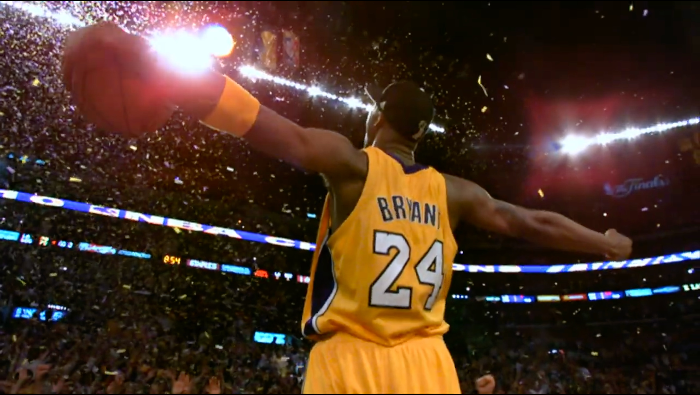
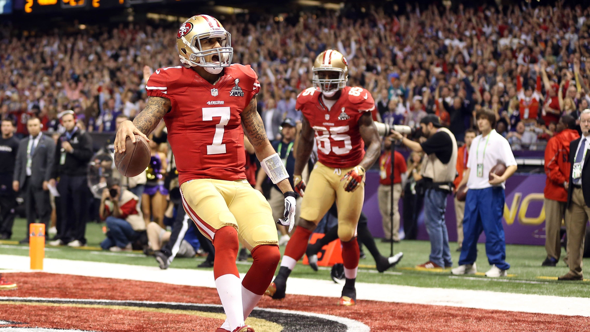

The Quest To Collect Memorabilia From My All Time Favorite Athelete
The Collection Of Greatness
I've spent the better part of the last 10 years collecting memorabilia from some of my all time favortie athletes. Jerseys from championship seasons, iconic homeruns, and autographed balls from the legends. Here are some of my favorite pieces in my collection.
Autographed Kobe Bryant Jersey, 2010 Championship Season
He won his second Finals MVP award and his fifth NBA championship.

Autographed Colin Kaepernick Jersey, 2013 Super Bowl Season
He led the 49ers to a 12–4 record and a berth in the NFL playoffs. In the Wild Card Round, the 49ers played the Green Bay Packers.

Autographed Barry Bonds Homerun Ball, 2001 Record Season
On Oct. 7, 2001, Barry Bonds stepped up to the plate and knocked his 73rd baseball of the season over the fence.
He pushed past Mark McGwire as the all-time single-season home run record holder.
Autographed Mike Tyson Boxing Gloves
Mike Tyson was once named the "Baddest Man on the Planet".
He retired in 2005 with a record of 50-6 and was inducted into the International Boxing Hall of Fame in 2011.
He knocked out 44 of his opponents.